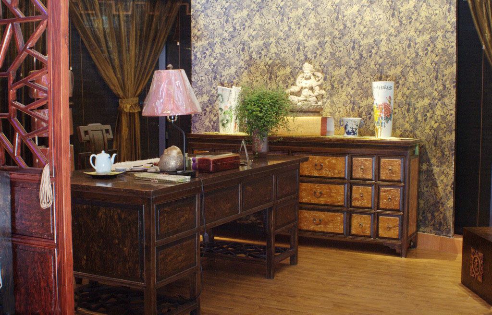
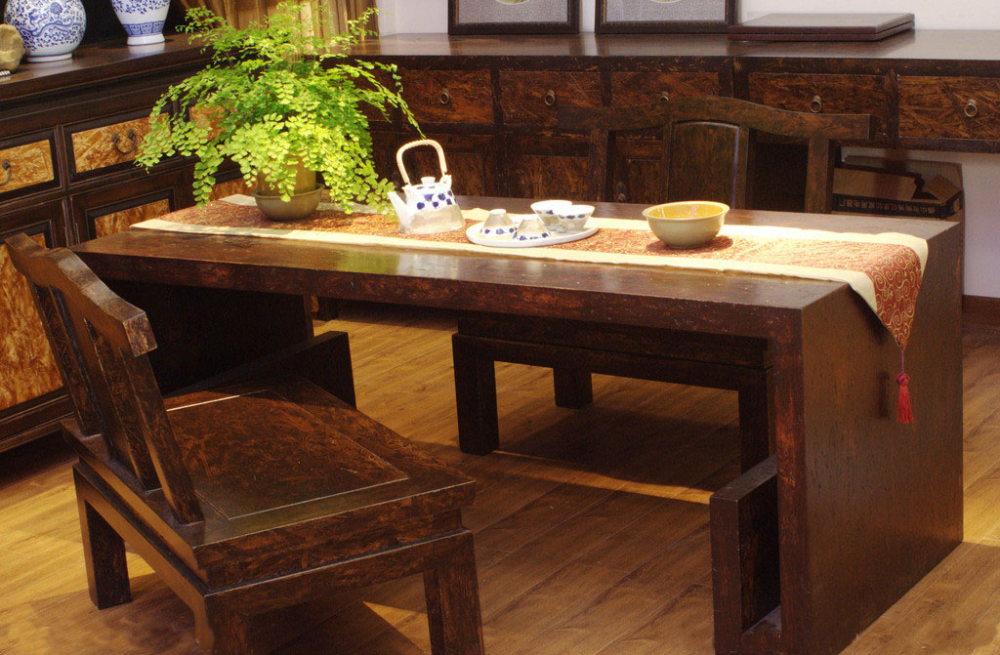
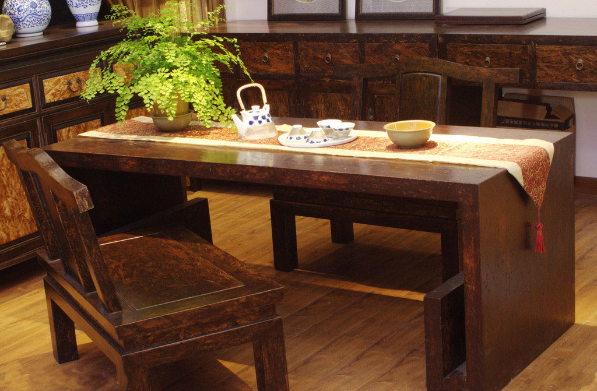

概念
中国古典家具是在生活、工作或社会实践中供人们坐、卧或支承与贮存物品的一类器具，泛指具有中国古典风格的家具种类，包括旧式家具和仿古家具、民间家具和宫廷家具、软木家具和硬木家具、漆木家具和雕刻家具。就是近现代制品，只要具有中国古典风格，均可称为中国古典家具。严格意义的中国古典家具则指民国之前具有典型中国古典风格的旧式家具，而不是近代或现代仿古家具。

框架类
柜架类包括架格；亮格柜；圆角柜；方角柜等。 书格即书柜、架格、书架，不是专门用来放置书籍，它的基本特征是以立木为四足，用横板将空间分隔为若干层。亮格柜是亮格和柜子相结合的家具，明式的亮格都在上，柜子在下，兼备摆饰与收藏两种功能。圆角柜又名面条柜，圆角柜柜顶的前、左、右三面有小檐凸出，称为柜帽，柜帽转角处多削方棱成为圆角，所以叫做圆角柜。方角柜当然就是四角见方，上下同大，腿足垂直无侧脚。
屏风类
屏风是屏具的总称，包括由多扇组成，可以折迭或向前兜转的“围屏”和下有底座的“座屏风”。 古代屏风还可细分为地屏、床屏、梳头屏、灯屏、挂屏。地屏主要分为座屏和落地屏。地屏形体大，多设在厅堂，一般不会移动；座屏即插屏式屏风，是把把单独屏风插在一个特制的底座上。座屏有独扇、三扇、五扇等奇数规格，独扇座屏与底座可连可卸，可卸的称为“插屏式座屏风”。床屏形体较小，多与床榻结合使用；梳头屏是用于梳妆用的小型屏镜；灯屏多为灯遮风的小屏风；挂屏为明末才开始出现的一种挂在墙上作装饰用的屏牌，大多成双成对，四扇为四条屏等，到清朝后此种挂屏十分流行，至今仍为人们喜爱。
椅凳类
椅凳类包括：杌凳；坐墩；交杌；长凳；椅；宝座等等。 杌字的本义是树无枝，杌凳往往被作为无靠背坐具的名称。明式椅子大致分为圈椅、宝座、交椅、扶手椅和靠背椅五种。圈椅是明式家具中最具有文化品位的坐具，它暗含中国古典哲学天圆地方；亦称罗圈椅，是指椅子后背搭脑与扶手由一整条圆润流畅的曲线组成，到明朝圈椅渐成风尚，甚至于在现代室内设计中，也是融合度最高的品项。靠背椅指的是只有靠背，不带两侧扶手的椅子，大致分为灯挂式和一统碑式，灯挂式的靠背搭脑向两侧挑出；一统碑式的椅背和南官帽的靠背相似，搭脑两端不突出。而扶手椅指的是兼具靠背与两侧扶手的款式，其一是南官帽椅，北方地区称为玫瑰椅，南方地区称为文椅。其二是四出头官帽椅，官帽椅是以其造型类似古代官员的帽子而得名。坐墩：又名肃墩，由于其上多覆一方丝织物而得名。在明代及前清时期的坐墩上还保留着藤墩和木腔鼓的痕迹。交杌：俗称马扎，和胡床类似，自东汉从西域传至中土，百年来流传甚广，基本制式是由8根直木构成，长期无变化。 长凳：明清时期，长凳式样繁多。小条凳是民间日用品，二人凳宜两人并坐，至今江南地区仍在使用。 床榻类则包括榻、罗汉床、架子床等。
 


对称
对称原则：东方美学讲究对称，把融入了中式元素具有对称的图案来装饰，再把相同的家具、饰品以对称的方式摆放，就能营造出纯正的东方情调，更能为空间带来历史价值感和墨香的文化气质。对称设计是中国建筑、家具等普遍采用的构造原则。对称能够减少视觉上的冲击力，给人们一种协调、舒适的视觉感受，在饰品配置过程中应该采用对称原则来摆放饰品;
典型元素应用
典型元素的应用：中式家具风格的包装元素应该从中国悠久的历史中探索，能够代表中式古典居家风格的元素很多，比如中国字画，其清新淡雅、行云流水，不论用于客厅还是书房都能体现出主人优雅的生活品位，而瓷器、中国结、京剧脸谱、宫灯等都是中式古典元素的代表，另外，扎染、蜡染的布艺，女红盘扣等都可以应用在布艺，床上用品面料可以用有代表性的丝绸面料，以突出室内的华丽。以笔、墨、纸、砚为文房所使用的文房四宝等等都是中式风格元素的体现;
色彩和图案搭配
色彩应用：中式古典居家风格饰品色彩可采用有代表性的中国红和中国蓝，居室内不易用较多色彩装饰，以免打破优雅的居家生活情调。色彩不宜明快，应以沉稳的灰色调为主。绿色尽量以植物代替，如吊兰、大型盆栽等等; 图案应用：典型的中式图案来源于大自然中的花、鸟、虫、鱼等。花卉中牡丹花型丰满、色彩娇艳，被诗人称为“国色天香”，“花中之王”，“花中富贵”，故象征富贵。梅花，优雅飘逸、傲霜斗雪象征坚强，因此自古以来为我国的无数文人所赞咏，他们常以梅花来表现自己的情趣、人格或情操。茉莉象征纯洁、优美。另外一些由点、线、面构成的纹样也可以用于家具和饰品中。
分隔空间
中国传统的室内空间最有特色、最突出之处就在于综合运用隔扇、屏风、罩、博古架、分隔空间，这样就既会有隔开的小空间又会增加空间的层次变化。这种方式形成的空间往往隔而不断，而家具自身的通透形态也有着与它们相协调的空间渗透作用，进而共同营造了中国传统建筑灵动的空间意境。这种虚拟空间的方式在国外的室内环境很少见。善于运用软性隔断是中国古典建筑室内空间设计艺匠的一份宝贵遗产！ 这种对传统空间的分隔方法，依然可以运用在现代的室内空间中。多宝格，就是非常好的选择，这种形式的家具在清朝时期十分盛行。多宝格以前为存放古玩珍宝的格式框架，现代室内空间运用它不仅可以作为陈列架，从而彰显了主人的品味。
烘托气氛
在现代室内若要营造中式的装饰风格，中国传统的木结构建筑仍然能为人们提供设计的元素。传统的雕花窗曾是室内设计最活跃的设计元素，它既是实用品又是很好的装饰品。现代设计师可以根据雕花窗的保存程度，作不同的使用功能：保存较好的画，可作为室内的二层窗，如有破损可以做小的修补，然后挂在墙上作为挂饰；更有甚者，把雕花窗覆上玻璃，拿来作为茶几使用，雕花窗板的再次利用，使这一民间工艺在现代居室里重放光华。这些传统的元素不仅为现代室内环境营造了浓浓的古典气氛，而且还能享受到中国古典文化的魅力。